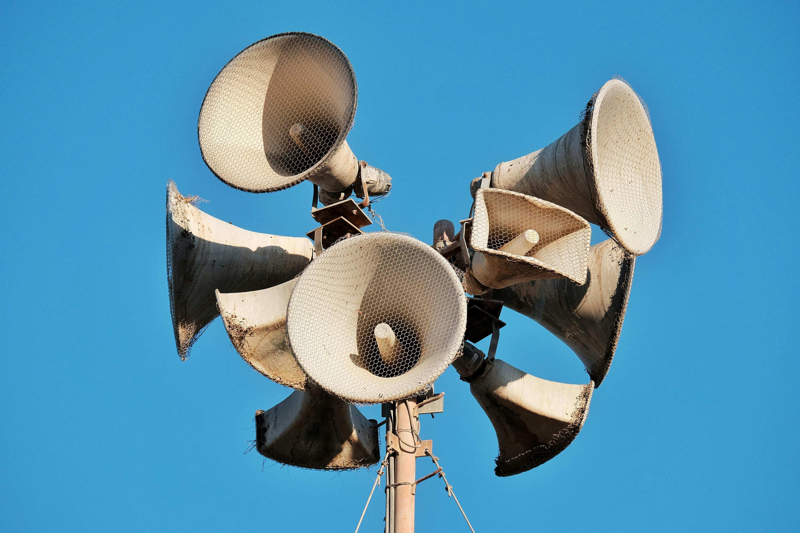
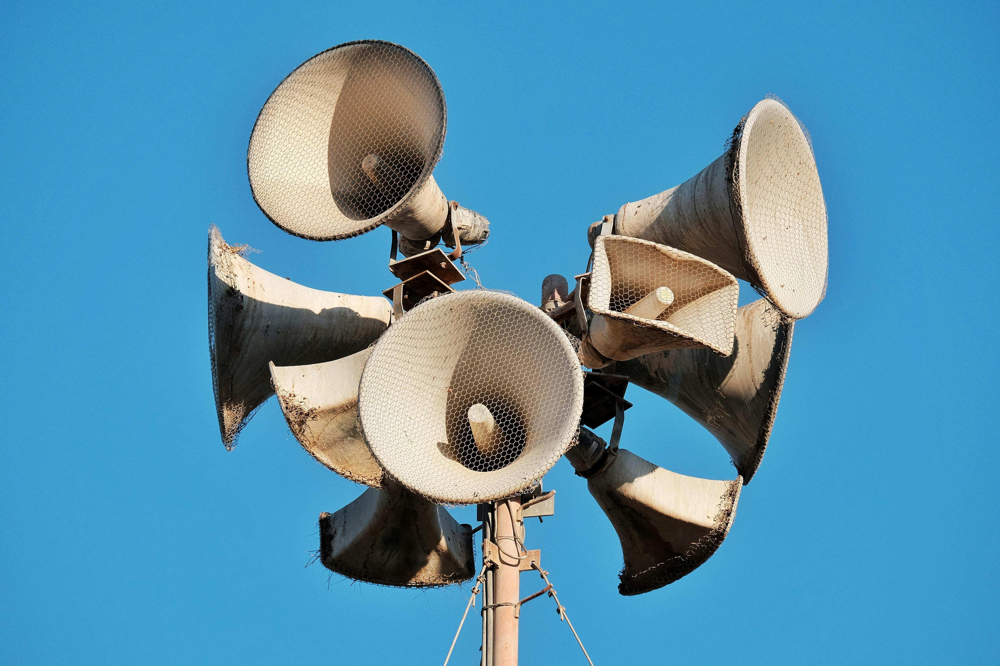

NOISE POLLUTION
 


Noice pollution is the disturbing or excessive noice that may harm the
activity or balance of human or animal life. The source of most outdoor
noice worldwide is mainly caused by machines and transportation
systems,motor,vehicies,aircraft and trains. Outdoor noice is summarized
by the world environmental noice. Poor urban planning may give rise to
noice pollution,since side-by-side industrial and residential buildings
can result in noice pollution in the residential areas.
Noice pollution affects boyh health and behavior. Unwanted sound (noice)
can damage psychological health. noice pollution can cause
trouble,hypertention,high stress levels, tinnitus,hearing loss,sleep
disturbances and other harmful effects.
Noise pollution is a growing concern in urban areas, including Dhaka, Bangladesh. It refers to unwanted or disturbing sounds that affect the health and well-being of humans and wildlife. The sources of noise pollution in Dhaka include: Traffic horns: Hydraulic horns can reach levels of 120 decibels, causing hearing injuries and discomfort. Construction sites: Heavy machinery and equipment generate loud noises, disrupting residential areas. Loudspeakers: Used in social occasions, seminars, and public gatherings, they often exceed acceptable noise levels. Vehicles: Cars, buses, and motorbikes contribute to noise pollution with their horns, exhausts, and tires. Industrial activities: Factories, generators, and machinery produce constant noise, affecting nearby residential areas. Health Impacts Noise pollution has severe health consequences, including: Hearing loss: Prolonged exposure to loud noises can cause permanent hearing damage. Cardiovascular disease: Chronic noise exposure is linked to increased blood pressure, heart rate, and cardiovascular risk. Sleep disturbances: Noise pollution disrupts sleep patterns, leading to fatigue, irritability, and decreased cognitive function. Mental health: Noise pollution can contribute to anxiety, stress, and depression. Environmental Impacts Noise pollution also affects wildlife, including: Communication disruption: Anthropogenic noises interfere with animal communication, reproduction, and predator-prey relationships. Habitat disruption: Noise pollution can alter animal behavior, leading to changes in habitat use and population dynamics. Regulations and Enforcement While Bangladesh has laws and regulations in place to control noise pollution, such as the Noise Pollution (Control) Rules 2006, enforcement is often lacking. The High Court banned hydraulic horns in motor vehicles in 2017, but implementation has been limited. Solutions To mitigate noise pollution in Dhaka, consider the following: Enforce existing regulations: Strengthen enforcement of noise pollution laws and regulations. Implement noise-reducing technologies: Encourage the use of quieter construction equipment and vehicles. Raise awareness: Educate the public about the impacts of noise pollution and promote responsible noise management practices. Designate quiet zones: Establish noise-free areas, such as hospitals and residential zones, and enforce noise limits. By addressing noise pollution, we can create a healthier, more livable environment for both humans and wildlife in Dhaka.